ULA 6C001 modules
Contents
- How this section is organised
- 0. Overview: the 20 modules and their connections
- 1. clkgen — clock generator (÷2, 7 MHz)
- 2. tclk — bus-cycle decoding
- 3. hcounter — horizontal counter (448 clock ticks per scanline)
- 4. vcounter — vertical counter (312 lines per frame)
- 5. latch_control — latch strobes and video mode
- 6. data_latch — pixel byte latch
- 7. attr_latch — attribute latch + ink/paper selection
- 8. ao_latch — object latch (ink/paper/border for the DAC)
- 9. pixel_shift_reg — pixel shift register
- 10. flash_clock — flash-rate divider
- 11. flash_xnor — per-pixel ink/paper selection and flash
- 12. color_mux — R/G/B assembly
- 13. video_addr_gen — video-memory address (row/col)
- 14. address_enable — address pad enable (nAE)
- 15. ras_cas_romcs — DRAM timing and ROM select
- 16. video_signal_features — sync, blank, border, INT, burst
- 17. dac_setup — video DAC input preparation
- 18. io — I/O port (keyboard, border, mic/ear)
- 19. contention — DRAM arbitration (CPU clock stretching)
- 20. Top ula and pads
- 21. Simulator: ulasim.py
- Appendix. Mapping to the icarus/ula.gtkw signals
Attention! Neural networks and agents still work very poorly with HDL netlists: the module schematic and waveform pictures below turned out “crooked” and are essentially placeholders. The trustworthy information is in the text, gate tables and equations; treat the figures as an illustration of the structure rather than exact documentation. Please be understanding.
Section for issue emu-russia/ula#4: description of each module of the recovered modular HDL (
hdl/ula6c001.v), its schematic, typical waveforms and model C++ code.Russian version: ula-modules.md
How this section is organised
hdl/ula6c001.v is a “sheet” netlist (661 cells) that has been split over
modules. Cross-coupled NOR pairs forming RS flip-flops are folded into the
GD primitives (transparent latches), and where the sequential logic still
lives at the gate level (counters, clock divider, shift register) we do not
draw it “as a NOR mess”: for each module below the recovered structure is
shown — latches/flip-flops are drawn with proper symbols, and the combinational
trees through their boolean functions (obtained by an honest gate analysis,
not by redrawing someone else's schematic).
Naming conventions:
- signal
/X(ornX) is active low; GD— a latch with an inverted enable (nE):Q = DwhilenE=0, otherwise the state is held (inhdl/ulabase.vthis isreg val; always @(*) if (~nE) val = D;),nQ = ~Q;- logic gates are numbered as in the source (
gNNN) — the cell numbers match the flat netlistnetlist/ula6c001.v(see the issue-#2 report); - bus names:
C[8:0]— the horizontal counter,V[8:0]— the vertical one.
All waveforms in imgstore/waves/*.png are an honest model output:
ulasim.py (see the last section) reproduces the same HDL tick by tick with
gate accuracy and dumps a VCD with the signal set of the icarus/ula.gtkw
monitors. In the model the clock input OSC is 20 MHz (period 50 ns, as in
icarus/run_ula.v), therefore nCLK7 = OSC/2 = 10 MHz, a scanline =
448 nCLK7 ticks = 44.8 µs, a frame = 312 scanlines = 13.98 ms. On the real
chip OSC = 14 MHz (pads.md, /PHICPU = OSC÷4), i.e. a scanline
corresponds to 64 µs and a frame to ~20 ms; all the logic is frequency
independent.
0. Overview: the 20 modules and their connections
| # | Module | Purpose | Source |
|---|---|---|---|
| 1 | clkgen |
OSC÷2 divider → nCLK7 (7 MHz) |
hdl/ula6c001.v:453 |
| 2 | tclk |
CPU bus-cycle decode → TCLK/K0 |
:796 |
| 3 | hcounter |
horizontal counter C[8:0], 448 ticks/line |
:474 |
| 4 | vcounter |
vertical counter V[8:0], 312 lines/frame |
:613 |
| 5 | latch_control |
data/attribute latch strobes, border/video-enable | :807 |
| 6 | data_latch |
pixel byte latch (8× GD) |
:853 |
| 7 | attr_latch |
attribute byte latch + ink/paper→bright logic | :860 |
| 8 | ao_latch |
“object” latch (ink/paper/border), 8× GD |
:906 |
| 9 | pixel_shift_reg |
pixel shift register (8-bit load, serial out) | :913 |
| 10 | flash_clock |
flash-rate divider | :1053 |
| 11 | flash_xnor |
flash XNOR with the pixel stream → ink/paper select | :1123 |
| 12 | color_mux |
R/G/B colour assembly from ink/paper + blank/sync | :1138 |
| 13 | video_addr_gen |
video memory address mux (row/col from C,V) | :1148 |
| 14 | address_enable |
address pad output enable A[6:0] (nAE) |
:1245 |
| 15 | ras_cas_romcs |
DRAM timing (/RAS, /CAS, /WE), ROM select |
:1256 |
| 16 | video_signal_features |
sync/blank/border/INT/colour burst | :1331 |
| 17 | dac_setup |
video DAC input forming (U,V,/Y) | :1400 |
| 18 | io |
I/O port (keyboard, border, mic/ear) | :1464 |
| 19 | contention |
DRAM arbitration: CPU clock with stretching (contention) | :1514 |
| — | ula (top) |
ties the modules and pads together (hdl/ula6c001.v:6, pads — pads.md) |
:6 |
Full structural diagram of the module-to-module and pad connections:
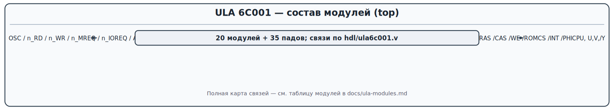
.A name-by-name table of all internal signals (name → from → to → description) is in ula-signals.en.md (issue #10).
Model-measured timings referenced by the sections:
- scanline:
HCrst→HCrst= 448nCLK7ticks (44.8 µs in the model); - frame: 312 scanlines = 13.98 ms in the model;
Vresets on the 312th scanline; VSync: decadeV ∈ {248..251}(nor6overnV6,nV7,V2,nV3..nV5);- data fetches: 32 pixel bytes + 32 attributes per scanline (in pairs,
the attribute right after the pixel byte),
nAOLatchreloads every 8nCLK7ticks (56 per scanline — including the border); nINT: a pulse at the beginning of the frame.
1. clkgen — clock generator (÷2, 7 MHz)
Purpose
The only truly asynchronous node: it divides the input OSC (14 MHz on the
board, see pads.md) by two and produces the main video-path clock
nCLK7 (~7 MHz). The chip has no external reset: the divider "arms" itself
right after power-on.
Interface
clkgen (
input osc_from_pad, // from the OSC pad
output nCLK7 // CLK7 = OSC/2
);
Structure (reconstruction from gates g52, g54, g423..g432)
The divider proper is two cascaded RS latches (// FD in the source), i.e.
a "master–slave" D flip-flop wired as a counting ring (nQ → D):
| gates | function |
|---|---|
g52 |
buffer-inverter w441 = /OSC |
g423,g424,g425 |
master RS latch (w442, w443) |
g430,g431,g432 |
slave RS latch (w444..w446, w449) |
g54 |
buffer-inverter nCLK7 = /w446 |
Here the RS latches are not shown as a NOR pair — this is a classic divide-by-2 D flip-flop; that is exactly how it works (divides by 2):
OSC ──┬─► buffer ──► [D flip-flop ÷2] ──► buffer ──► nCLK7
└──────────────── nQ ────────────────────┘ (feedback)
Diagram:
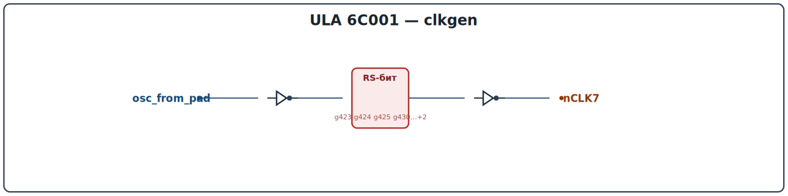
. Oscillogram (OSC, nCLK7, /PHICPU):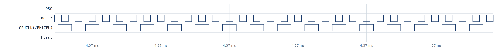
.Behaviour (verified in the model)
nCLK7 toggles once per period of OSC (÷2): in the
model with OSC=20 MHz the nCLK7 period is 100 ns. nCLK7 clocks the
h-counter, the data latches and the pixel shift register. /PHICPU (CPU
clock) is not generated here but in contention from the low bits of C —
essentially a C0-like signal (3.5 MHz) that gets stretched during
contention (see section 19).
C++ (emulator)
// clkgen: OSC/2 -> nCLK7
struct ClkGen {
bool master = 0, slave = 0; // two D-flip-flop stages
bool nCLK7 = 0;
// called on every OSC change (14 MHz on the board)
void eval(bool osc) {
bool d = osc; // input buffer/inverter keeps the phase
if (!osc) { master = d; } // master transparent while OSC=0
else { slave = master; } // slave copies while OSC=1
nCLK7 = !slave; // output buffer-inverter
}
};
2. tclk — bus-cycle decoding
Purpose
From the /MREQ, /IOREQ, /RD, /WR signals from the processor it forms
two internal strobes nTCLKA/nTCLKB (active when both requests
/MREQ+/IOREQ are low — i.e. in fact "bus busy"), plus the output K0
(test mode/keyboard scanline 0).
Interface
tclk ( nMREQ, nIOREQ, nRD, nWR, WR(inout), RD(inout),
output nTCLKA, nTCLKB(inout), K0, input nV8 );
WR = /nWR, RD = /nRD — just inverter-buffers (g81, g82).
Gates and equations
g527: nTCLKA = nor4(nMREQ, nIOREQ, WR, nRD) = 1, only if all 4 inputs are 0
g525: nTCLKB = nor4(RD, nWR, nMREQ, nIOREQ) = 1, only if all 4 inputs are 0
g83: w313 = not nTCLKB
g528: K0 = nor(nV8, w313) // test-mode output to KB0
K0 (goes to pad KB0) is active when nV8=0 and nTCLKB=1 — i.e.
K0 = nV8 · nTCLKB. On the real board KB0 is the only bidirectional
keyboard pin that the ULA can pull to zero.
Diagram:
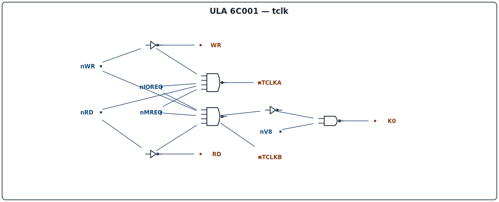
.C++
struct TClk {
bool nMREQ, nIOREQ, nRD, nWR, nV8;
bool nTCLKA, nTCLKB, K0;
void eval() {
bool WR = !nWR, RD = !nRD;
nTCLKA = !( nMREQ || nIOREQ || WR || nRD ); // nor4
nTCLKB = !( RD || nWR || nMREQ|| nIOREQ); // nor4
K0 = !( nV8 || nTCLKB ); // nV8 & nTCLKB
}
};
3. hcounter — horizontal counter (448 clock ticks per scanline)
Purpose
Counts the position within a scanline. Clocked from nCLK7 (through internal
phases), it outputs C[8:0]/nC[8:0] to all consumers (video-memory
address, sync/blank logic, RAS/CAS decoders, arbitration). It is reset once
per scanline by the HCrst signal — the count period is exactly 448 clock
ticks (measured in the model: HCrst→HCrst = 448 periods of nCLK7).
Interface
hcounter ( input nCLK7, nTCLKA,
output [8:0] nC, C, output HCrst, CLKHC6 );
Gate analysis
The counter is built from identical bit cells; each cell in the raw netlist is 5-6 NORs (a "master–slave" RS latch with carry combinatorics), shown here as an ordinary enabled T flip-flop:
- bit 0 (
g444..g455): counts on the edges ofCLK7 = /nCLK7; - bits 1..5 (
g447..g522etc.): the clock input is a combination of the phase and the low bits (carry cascade); - bits 6..8 (
g98..g129): additionally have the resetHCrst; g518:CLKHC6 = nor(nTCLKA, nC[5])— the clock of the vertical counter (seevcounter);g104:HCrst = nor(nC[8], nC[7]) = C8 · C7— the reset decade.
Key finding of the analysis: the reset happens not on the value 448 as such,
but on the decade C8·C7 (count 384..447), combined with the clocking phase
of the high bits — the resulting scanline period is exactly 448, which
corresponds to a 64 µs scanline at the real 7 MHz frequency.
Schematic:
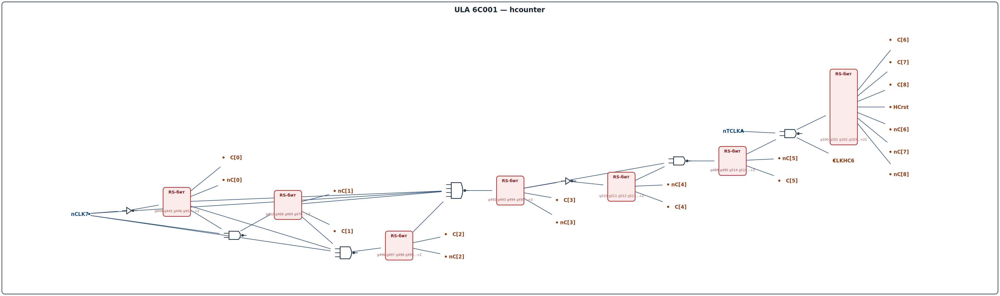
. Oscillograms: whole scanline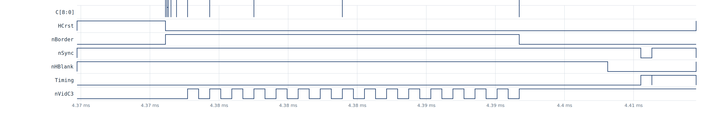
, low bits/phases w_clockgen.Measured behaviour
C0toggles every 2nCLK7clock ticks (3.5 MHz on the real chip);HCrst— one pulse per scanline (see [w_hline]).CLKHC6is used by the vertical counter: in idle (no bus activity,nTCLKA=0)CLKHC6 = C5.
C++
// hcounter: 9-bit scanline counter, period 448, counting on nCLK7
struct HCounter {
uint16_t C = 0; // C[8:0]
bool HCrst = 0;
void tick(bool nCLK7) { // active nCLK7 edge
if (!nCLK7) {
C = (C + 1) % 448; // equivalent of the C8·C7 reset decade
}
HCrst = (C >= 384); // nor(nC8,nC7) — reset decade
}
int count() const { return C; }
};
Note: in the emulator the integer counter with modulus 448 gives the same result as the gate-level decade, but without the 448-tick "tail" (intermediate carry states are not needed in the emulator).
4. vcounter — vertical counter (312 lines per frame)
Purpose
Counts the frame lines: V[8:0]/nV[8:0] go to the border/sync logic,
to the video memory address generator and to INT. Increment — once per line
(measured in the model: V = V+1 on each HCrst), reset — on line 312
(frame = 312 lines, 20 ms at 7 MHz).
Interface
vcounter ( input HCrst, CLKHC6, nC5,
output [8:0] nV, V );
Gate analysis
The counter bits are broken down in vcounter.md into standard cells:
- bits 0..2 — TCE (toggle with clock enable), clocked by CLKHC6;
- bits 3..5 — TRCE (TCE + reset); the additional internal reset vrst
is produced in g567 (reuses the inverter g89 of bit 3);
- bits 6,7 — again TCE;
- bit 8 — TRE (TRCE without carry out; the redundant NOR is dropped, since the carry
is not needed further on).
In hdl/ula6c001.v bits 3..8 are still marked // not sure — this is the zone
of the least confidence in the reverse-engineering (see vcounter.md, task #2 report),
so in the waveforms on the upper bits of V possible "within-line"
transitions — the model honestly shows the current state of the HDL.
Schematic:
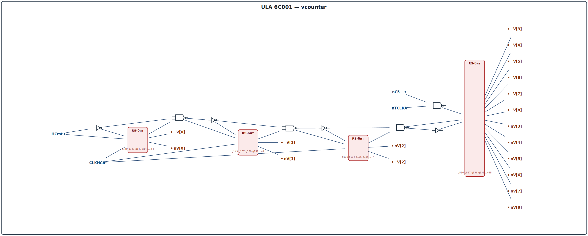
. Waveforms: vertical frame sweep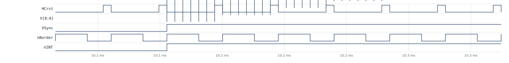
,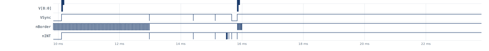
.C++
// vcounter: frame line counter; modulus 312
struct VCounter {
uint16_t V = 0; // V[8:0]
void line() { // once per line (on HCrst)
V++;
if (V >= 312) V = 0; // 312 lines/frame
}
};
5. latch_control — latch strobes and video mode
Purpose
The most "controlling" module: it produces the active strobes of the data latch
(nDataLatch), attribute latch (nAttrLatch), object latch (nAOLatch),
the parallel load signal of the shift register (SLoad), the
"video-active area" flag (VidEn, nVidEn), as well as the auxiliary
nVidC3, VidCASPulse, C0_other, Border.
Interface
latch_control ( input nCLK7, nBorder, nC0..nC3, C1,
inout Border,
output nAttrLatch, nDataLatch, nAOLatch,
nVidC3, C0_other, SLoad, nSLoad, VidEn,
VidCASPulse );
Gates and equations
g49: Border = /nBorder // "border" as a positive signal
g422: w349 = nor(nC3, Border); g50: nVidC3 = /w349
// nVidC3 = 0 (video) in the window: C3=0 and not border -> "video-phase C3"
g55..g59: chain of buffer-inverters from nCLK7 (2-gate delay)
g449: VidCASPulse = nor(w394, nC0) // pulse at the start of the line
g427: w396 = nor4(C1, nC0, VidCASPulse, nVidC3)
g408,g409: w398 = not not w396 (2 inverters); g51: nDataLatch = /w398
g443: SLoad = nor4(C1, nC2, nVidEn, C0_other); g339: nSLoad = /SLoad
g406: w339 = nor3(C1, nC0, nC2); g46: nAOLatch = /w339
g407: w419 = nor4(nC0, nVidC3, nC1, VidCASPulse); g47: nAttrLatch = /w419
GD viden_gd: VidEn/nVidEn — latch by nC3: at nC3=0 VidEn = /nBorder
Meaning: while C passes through the screen area (decodes on C1..C3), the latches
open in turn: nAOLatch — every 8 clocks (at the character-cell boundary),
nDataLatch/nAttrLatch — at the moment the pixel byte and the attribute following
it are fetched (in the model: 32 pairs per line, attribute ~200 ns later than the byte).
Schematic:
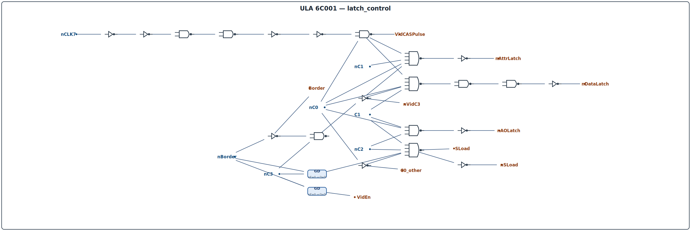
. Waveform: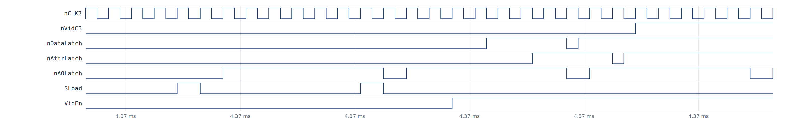
.C++
// strobes per formulas (per gates g422..g449, g406..g443)
struct LatchControl {
bool nCLK7, nBorder;
bool nC0, nC1, nC2, nC3, C1;
bool nAttrLatch, nDataLatch, nAOLatch, nVidC3, VidCASPulse;
bool C0_other, SLoad, nSLoad, VidEn;
bool VidCASPulse_d1; // delay (g55..g59)
void eval() {
bool Border = !nBorder;
bool w349 = !(nC3 | Border); // g422
nVidC3 = !w349; // g50
VidCASPulse = !(VidCASPulse_d1 | nC0); // g449 (g55..g59 delay)
VidCASPulse_d1 = nCLK7; // (simplified: buffer chain)
// nDataLatch = !(C1|nC0|VidCASPulse|nVidC3) after 2 inverters (g408/9)
bool w396 = !(C1 || nC0 || VidCASPulse || nVidC3);
nDataLatch = !w396; // g51
C0_other = !nC0; // g57
bool w339 = !(C1 || nC0 || nC2); // g406
nAOLatch = !w339; // g46
bool w419 = !(nC0 || nVidC3 || nC1 || VidCASPulse); // g407
nAttrLatch = !w419; // g47
SLoad = !(C1 || nC2 || nVidEn_out() || C0_other); // g443
nSLoad = !SLoad; // g339
}
};
6. data_latch — pixel byte latch
Purpose
A transparent 8-bit latch (GD dl[7:0]): during the nDataLatch strobe
it captures the data byte D7..D0 from the data bus (ULA video memory read) and
stores it until the next character cell. The outputs are inverted nDL[7:0]
(it uses the latches' nQ), because the shift register downstream is built on NOR.
Interface
data_latch ( input [7:0] DI, // DI = {D7..D0}_from_pad (most significant bit first)
input nDataLatch,
output [7:0] nDL ); // nDL[i] = nQ of latch i
Gates and C++
struct DataLatch {
uint8_t dl = 0;
void eval(bool nDataLatch, uint8_t D) {
if (!nDataLatch) dl = D; // transparent latch
}
uint8_t nDL() const { return ~dl; } // nQ outputs
};
Schematic:
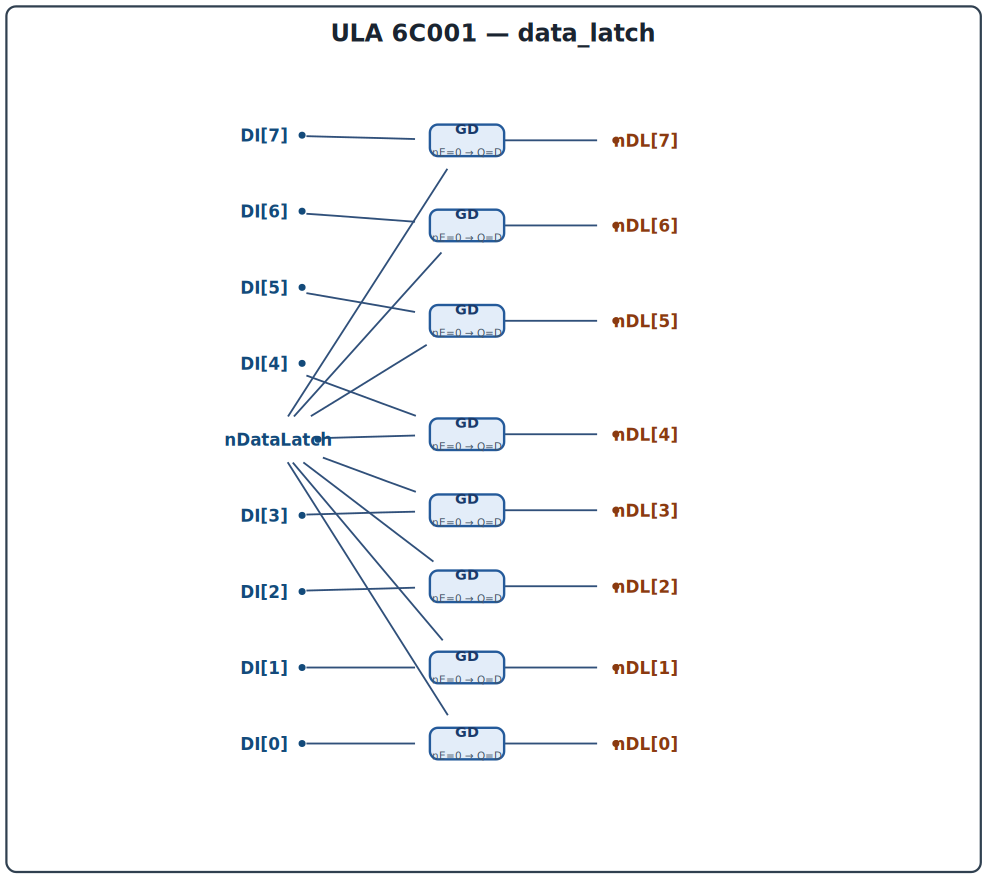
(8×GD).
7. attr_latch — attribute latch + ink/paper selection
Purpose
Latches the attribute byte (ink/paper colour, brightness, flash) during
nAttrLatch, then, taking VidEn into account, drives the composite signals
into the object latch: the ready ink/paper colour for each component
(PB0_B,PB1_R,PB2_G) and the half-bright AL[6]=HL, AL[7]=FL.
The attribute bits (ZX Spectrum): D7=FLASH, D6=BRIGHT, D5..D3=PAPER,
D2..D0=INK. The logic with VidEn does the following: when the video-active
area is disabled (VidEn=0), the border colour (B0_B..B2_G from io) is
substituted into ink/paper, i.e. a "paper/border" multiplexer operates
(comment // +paper/border mux in the source).
Interface
attr_latch ( input nAttrLatch, B0_B, B1_R, B2_G, VidEn,
input D7..D0_from_pad,
output [7:0] AL, PB0_B, PB1_R, PB2_G );
Gates (after reduction)
GD al[7:0]: AL(capture) by nAttrLatch, al_7..al_0 = D7..D0
g34/g309: AL[6] = nor(~al_6, nVidEn) = al_6 · VidEn // HL
g35/g326: AL[7] = al_7 · VidEn // FL
B: PB0_B = nor( nor(AL[3], nVidEn), nor(B0_B, VidEn) ) // paper/border blue
R: PB1_R = same with AL[4] and B1_R
G: PB2_G = same with AL[5] and B2_G
al_6 (attribute D6, BRIGHT) passes to AL[6] only in the video-active
area (VidEn); likewise for al_7 (D7, FLASH). The paper bit of the B
channel (AL[3]) is replaced in PB0_B by the border colour B0_B when
VidEn=0, and so on — this is the "paper/border" multiplexer.
Schematic:
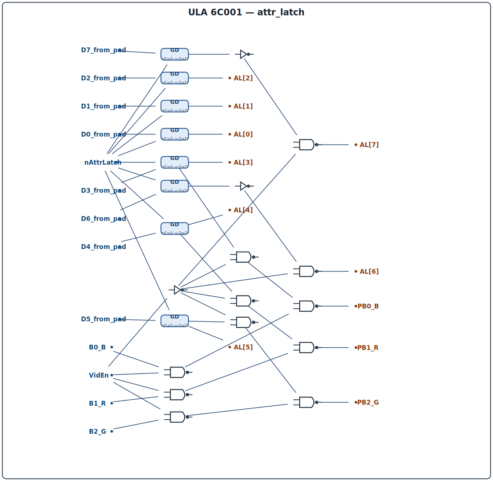
.C++
struct AttrLatch {
uint8_t al = 0; // latched attribute byte
bool B0_B, B1_R, B2_G, VidEn;
void latch(bool nAttrLatch, uint8_t d) { if (!nAttrLatch) al = d; }
void eval() {
bool nVidEn = !VidEn;
AL6_HL = nVidEn || !bit(al,6); // nor g309
AL7_FL = nVidEn || !bit(al,7);
PB0_B = !( (nVidEn && !bit(al,3)) || (B0_B && VidEn) );
PB1_R = !( (nVidEn && !bit(al,4)) || (B1_R && VidEn) );
PB2_G = !( (nVidEn && !bit(al,5)) || (B2_G && VidEn) );
}
};
8. ao_latch — object latch (ink/paper/border for the DAC)
Purpose
Holds the 8-bit "object" that determines the pixel colour at each moment.
It is reloaded every 8 nCLK7 cycles (at the character-cell boundary,
nAOLatch), including in the border area, when the inputs carry the border
colour (PB* from io/attr_latch). Output AO is read by color_mux,
dac_setup (HL) and flash_xnor (FL). The bits of AO are shuffled so that
the (paper, ink) pairs go by colour channels (see below in this section).
Interface
ao_latch ( input nAOLatch, input [7:0] AL, PB0_B, PB1_R, PB2_G,
output [7:0] AO );
Structure
GD ao[7:0]: D = { AL[7], AL[6], PB2_G, AL[2], PB1_R, AL[1], PB0_B, AL[0] }
Q = AO // AO[i] = D[i] (i = 0..7)
I.e. the shuffling: AO[7]=FL, AO[6]=HL, AO[5]=PB2_G (paper green),
AO[4]=AL[2] (ink green), AO[3]=PB1_R (paper red), AO[2]=AL[1] (ink red),
AO[1]=PB0_B (paper blue), AO[0]=AL[0] (ink blue). The border colour for
the "video off" case is already folded into PB* from attr_latch, so AO
always contains the correct colour of the current object.
Schematic:
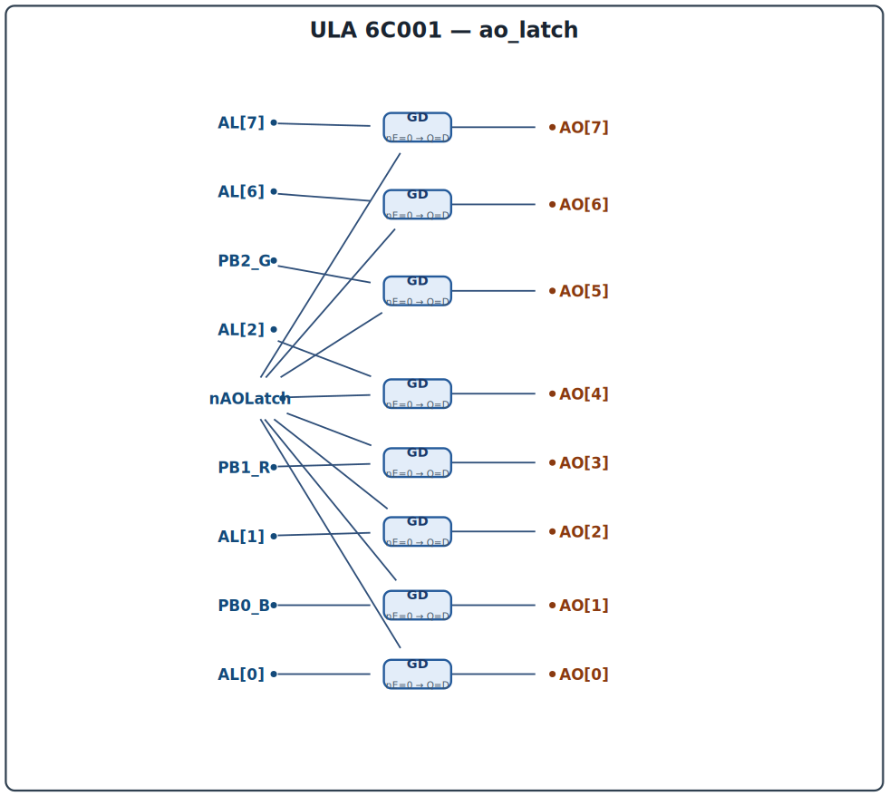
.C++
struct AOLatch {
uint8_t ao = 0;
// AO = { AL7, AL6, PB2_G, AL2, PB1_R, AL1, PB0_B, AL0 }
void eval(bool nAOLatch, uint8_t AL,
bool PB0_B, bool PB1_R, bool PB2_G) {
if (!nAOLatch) {
ao = ((AL >> 7) & 1) << 7 | ((AL >> 6) & 1) << 6 |
(PB2_G & 1) << 5 | ((AL >> 2) & 1) << 4 |
(PB1_R & 1) << 3 | ((AL >> 1) & 1) << 2 |
(PB0_B & 1) << 1 | (AL & 1);
}
}
};
9. pixel_shift_reg — pixel shift register
Purpose
Converts the pixel byte nDL[7:0] (from data_latch) into a serial
SerialData stream at one bit per nCLK7 cycle. Parallel load happens on
SLoad (at the start of every character cell), shifting — on the edges of
nCLK7.
Interface
pixel_shift_reg ( input nCLK7, SLoad, nSLoad,
input [7:0] nDL,
inout SerialData );
Analysis
Each of the 8 stages is a master–slave cell (in raw form 6-8 NORs per bit, here — a D flip-flop with a load circuit):
gr. g482..g486 : bit 0
gr. g461..g465 : bit 1
gr. g456..g460 : bit 2
...
gr. g398..g401 : bit 7; SerialData output = MSB shifted out
Output order: bits shift from 7 down to 0; the MSB (first pixel of the
character cell) leaves on SerialData first. SLoad enables the parallel
input nDL[i] for ~8 cycles, then nCLK7 cycles shift the byte. In
color_mux the stream is compared with the attribute (see flash_xnor).
Schematic:
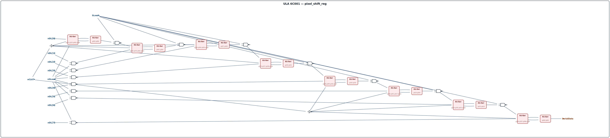
. Oscillogram (SLoad/SerialData/ink-paper selection):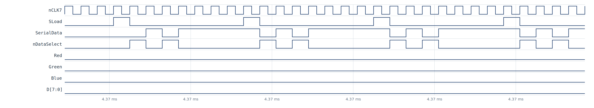
.C++
struct PixelShiftReg {
uint8_t reg = 0;
bool SerialData = 0;
// parallel load on SLoad (active high), shift on nCLK7
void tick(bool nCLK7, bool SLoad, uint8_t nDL) {
if (SLoad) { reg = ~nDL; SerialData = (reg >> 7) & 1; return; }
if (!nCLK7) { // output the MSB on every tick
SerialData = (reg >> 7) & 1;
reg = (reg << 1); // MSB first, LSBs filled with zero
}
}
};
10. flash_clock — flash-rate divider
Purpose
Divides the reference clock (in the model — packets at nV8/nTCLKB edges) down
to ~1.5–3 Hz — the flash rate of the FLASH attribute. The FlashClock output
controls ink/paper inversion in flash_xnor.
Interface
flash_clock ( input nTCLKB, nV8, inout FlashClock );
Analysis
Five cascaded counter cells (grp. g180..g209), each ÷2, i.e. ÷32 total from the input packet:
g529: w33 = nor(nTCLKB, nV8) // input pulses (bus or frame)
bit0: g180/g181/g207..g210
bit1: g182/g183/g203..g206
bit2: g184/g185/g199..g202
bit3: g186/g187/g195..g198
bit4: g188..g194 → FlashClock
On a real Spectrum board flash is counted from CPU activity (each MREQ),
i.e. the rate is tied to the number of executed instructions; in the model with a
"chip in a vacuum" the count comes from nV8 (V-counter) edges.
Diagram:
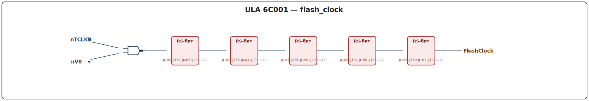
.C++
struct FlashClock {
uint16_t cnt = 0;
bool FlashClock = 0;
void pulse() { // edge of the input pulse train
cnt = (cnt + 1) & 0x1F; // 5 bits (÷32)
FlashClock = (cnt >> 4) & 1; // most significant bit
}
};
11. flash_xnor — per-pixel ink/paper selection and flash
Purpose
Compares the current bit of the SerialData pixel stream with the FlashClock
flash bit (attribute FL) and produces nDataSelect — the "ink or paper"
selector for the colour mux:
- pixel = 0 → paper, pixel = 1 → ink;
- if
FL=1andFlashClock=1— inversion (flash).
Interface
flash_xnor ( input FL, FlashClock, SerialData, output nDataSelect );
Gates
g79 : w195 = not FL
g516: w64 = nor(w199, w196); g517: w196 = nor(w195, FlashClock)
g487: w65 = nor(SerialData, w199); g488: w199 = nor(w196, SerialData)
g190: nDataSelect = nor(w64, w65)
After reduction (the cross-coupled pairs are an XNOR equivalent):
nDataSelect = ~( (FL ^ FlashClock) == SerialData )
Schematic:
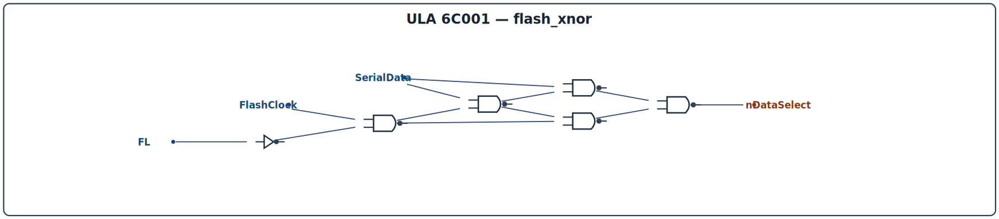
.C++
struct FlashXnor {
bool nDataSelect;
void eval(bool FL, bool FlashClock, bool SerialData) {
bool dataSel = (FL ^ FlashClock) == SerialData; // 1 -> ink
nDataSelect = !dataSel;
}
};
12. color_mux — R/G/B assembly
Purpose
Assembles the three video signals Red, Green, Blue from AO (object
colour) and nDataSelect (ink/paper), taking blanking into account: in
HBlank/VSync the colour = 0.
Interface
color_mux ( input nHBlank, VSync, nDataSelect, input [7:0] AO,
output Red, Green, Blue );
Equations (after reduction, assign in HDL)
HBlank = ~nHBlank; DataSelect = ~nDataSelect;
Green = ~( ~(AO[5]|DataSelect) | ~(AO[4]|nDataSelect) | HBlank | VSync );
Red = ~( ~(AO[3]|DataSelect) | ~(AO[2]|nDataSelect) | HBlank | VSync );
Blue = ~( ~(AO[1]|DataSelect) | ~(AO[0]|nDataSelect) | HBlank | VSync );
Channel pairs: Blue — (AO[1],AO[0]), Red — (AO[3],AO[2]),
Green — (AO[5],AO[4]); the left bit of a pair is paper, the right one is ink
(the bit permutation was already done in ao_latch). Active DataSelect=1
selects the ink component of a pair, otherwise — paper.
Schematic:
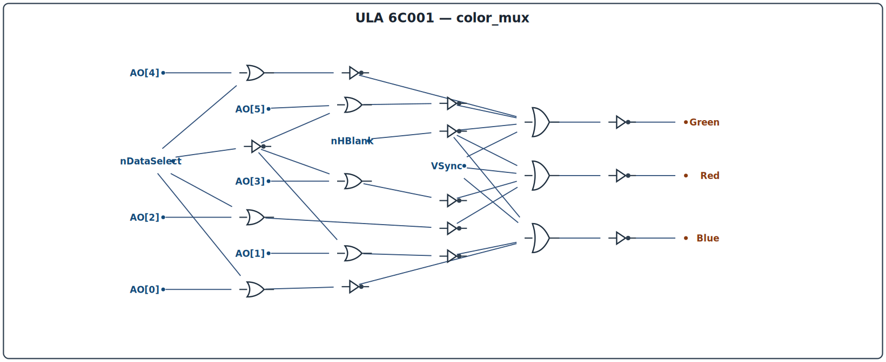
. Oscillogram: w_pixels (Red/Green/Blue rows).C++
struct ColorMux {
bool Red, Green, Blue;
void eval(bool nHBlank, bool VSync, bool nDataSelect, uint8_t AO) {
bool blank = !nHBlank || VSync;
bool ds = !nDataSelect;
if (blank) { Red = Green = Blue = 0; return; }
auto ch = [&](bool paper, bool ink) { // paper/ink = AO bits
return ds ? ink : paper;
};
Blue = ch((AO >> 1) & 1, AO & 1);
Red = ch((AO >> 3) & 1, (AO >> 2) & 1);
Green = ch((AO >> 5) & 1, (AO >> 4) & 1);
}
};
13. video_addr_gen — video-memory address (row/col)
Purpose
Forms the 7-bit row and column addresses for the DRAM from the C and V
counters (7 lines A0..A6 each on the RAS/CAS phases). Implements the
"scrambled" ZX Spectrum screen addressing (character cell → three screen thirds
and 8 rows of a character cell). Also outputs nVidRAS (the inverse of
VidRAS).
Interface
video_addr_gen ( input C1,C2,C4..C7, V0..V7, VidRAS,
output nVidRAS, A0_to_pad..A6_to_pad );
Analysis
The combinational logic (grp. g7..g96, g530..g618) is folded into a "row/col"
mux: the internal buses w99/w100/w101/w102, w115 and w217 are the RAS
phases (w102 = VidRAS-delayed and its inverses), while g530..g582 is a
buffer chain (an even number of inverters) that equalises the delay of w217.
Output functions:
A0 = f(C1, V5, w217 phase); A1 = f(C4, V6, V0);
A2 = f(C5, V7, V1); A3 = f(C6, V2, w99 phase);
A4 = f(C7, V6); A5 = f(V7, V3);
A6 = f(V4, w99 phases);
Exact formulas are in the gate table below:
| Output | Gates | Structure |
|---|---|---|
A0 |
g593, g616..g617, g615 | nor3( nor(V5,w115), nor(w99,V5), nor(w217,w216) ) + buffer |
A2 |
g583..g586 | nor3( nor(C5,w217), nor(w115,V1), nor(V7,w99) ) |
A5 |
g560..g561 | nor2( nor(V7,w115), nor(w217,V3) ) |
A1 |
g590..g592 | nor3( nor(V6,w99), nor(w115,V0), nor(w217,C4) ) |
A3 |
g588..g589, g618 | nor3( nor(C6,w217), nor(V2,w115), not(w99) ) |
A4 |
g557, g559, g587 | nor2( nor(C7,w217), nor(w115,V6) ) |
A6 |
g562, g555 | nor3( nor(V4,w217), not(w115), not(w99) ) |
where w99 = ~w100, w100 = nor(w101,w102), w101 = ~C1, w102 = VidRAS phase.,
w115 = ~w114, w114 = nor(w102, C1), w217 = ~w102.
Schematic:
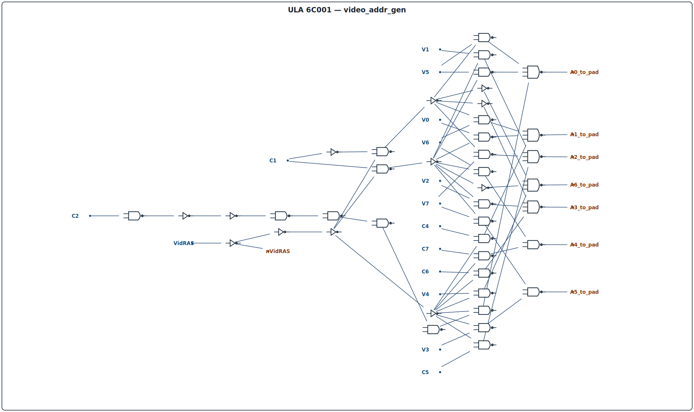
. Oscillogram (address on RAS/CAS phases):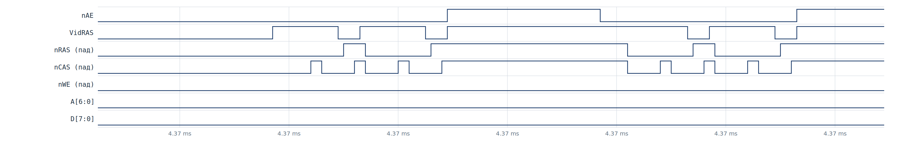
.C++
// video address: 14-bit screen address from (C,V), output in two phases
struct VideoAddrGen {
// 7 row bits (RAS phase) and 7 column bits (CAS phase)
uint8_t row, col;
void gen(uint16_t C, uint16_t V) {
// standard ZX Spectrum 48K screen layout
uint16_t vc = ((V & 0x7) << 8) | ((V >> 3) & 7) << 5 |
((V >> 6) & 0x1F);
uint16_t hc = (C & 0x1F);
uint16_t addr = (vc << 5) | hc;
row = addr & 0x7F; // lower 7 bits (RAS)
col = (addr >> 7) & 0x7F; // upper 7 bits (CAS)
}
};
14. address_enable — address pad enable (nAE)
Purpose
Controls the third state of the address outputs A0..A6 (pads with n_oe).
When nAE=0 the ULA drives the address; when nAE=1 the pads are in Z, and the
DRAM can address the processor (external board glue).
Interface
address_enable ( input nC0, nC1, nC2, C3, Border, output nAE );
Equations
g426: w399 = nor3(nC0, nC1, nC2) // = C0&C1&C2
g410: w363 = nor(C3, w399)
g391: w420 = nor(Border, w363)
g661: nAE = not w420
nAE = Border | C3 | (C0&C1&C2) // active (0) only outside the border,
// in video-memory fetch windows
Schematic:
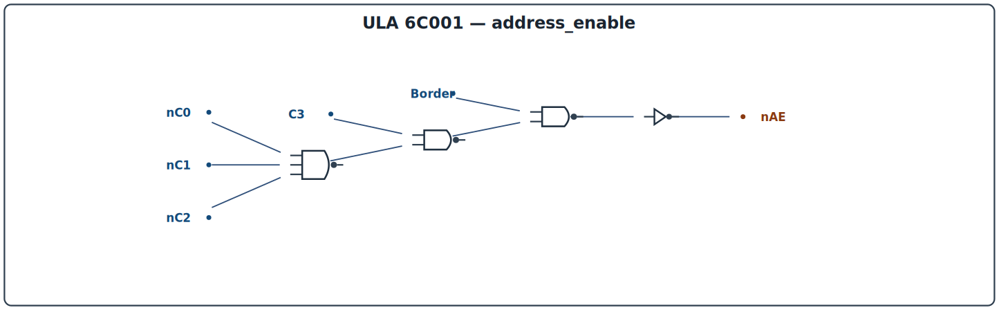
.C++
struct AddressEnable {
bool nAE;
void eval(bool nC0, bool nC1, bool nC2, bool C3, bool Border) {
bool w399 = C0_bit(nC0) && C0_bit(nC1) && C0_bit(nC2); // C0&C1&C2
nAE = Border || C3 || w399; // 0 = drive address
}
static bool C0_bit(bool nx){ return !nx; }
};
15. ras_cas_romcs — DRAM timing and ROM select
Purpose
Generates the dynamic-memory control signals: VidRAS/nVidRAS
(video RAS), the RAS strobe for processor cycles in the RAM area (w242/
RAM16), the output /RAS (with nRAS_oe), /CAS, /WE, plus /ROMCS
(ROM select) and the CAS-phase latches VidCASPulse.
Interface
ras_cas_romcs ( input nVidC3, A14, A15, nMREQ, nWR, WR, RD,
input nC0, nC1, C1, nVidRAS, nBorder, VidCASPulse,
output nRAS_to_pad, nRAS_oe, nCAS_to_pad, VidRAS,
nROMCS_to_pad, nWE_to_pad );
Analysis
g389: w242 = nor3(not A14, A15, nMREQ) // = A14 & /A15 & /MREQ : RAM16
// (processor accesses 0x4000-0x7FFF)
g390: nRAS_to_pad = nor(VidRAS, w242) // RAS = video OR processor-RAM
g388: nRAS_oe = nor4(A15, A14, nBorder, nMREQ)
g451: VidRAS = nor(w395, nVidC3) // video RAS in the active area
g395: w395 = nor3(nC0, nC1, w400) // counter phase (delays g60..g71)
g387: w408 = nor(A15, A14); g39: nROMCS_to_pad = not w408
// /ROMCS = A15|A14 (RAM -> no ROM)
g503: w239 = nor(WR, RD); ... g501..g506: MUXSEL latch buffers
g526: w315 = nor(w245, nWR); g87: nWE_to_pad = not w315 // /WE = w245·/WR
g473..g477: CAS decades: nCAS_to_pad = ... (w433/w434 with VidCASPulse, C1, nVidC3)
VidRAS starts both phases: RAS (row address), then, through
VidCASPulse and the delay buffers, CAS (column address). The chains of even
inverters (g60..g71, g65..g70, etc.) are delay lines that set the strobe
widths (in the model the RAS width is ≈ 275 ns; CAS is a burst of pulses).
Schematic:
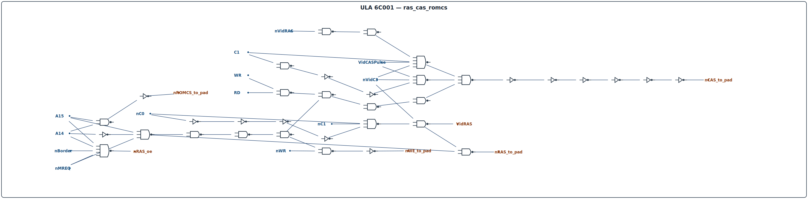
. Oscillogram: w_memory.C++
struct RasCasRomcs {
bool VidRAS, nRAS, nCAS, nWE, nROMCS, RAM16;
// called every nCLK7 cycle
void eval(bool nVidC3, bool A14, bool A15, bool nMREQ,
bool nWR, bool nBorder, bool VidCASPulse,
uint16_t C) {
RAM16 = A14 && !A15 && !nMREQ;
bool phase = fetch_phase(C); // fetch window per the counter
VidRAS = phase && !nVidC3 && !nBorder;
nRAS = !(VidRAS || RAM16);
bool ramsel = !(A15 || A14); // 0x0000-0x3FFF (ROM)
nROMCS = !ramsel;
nWE = !(RAM16 && !nWR);
// CAS: delayed VidCASPulse + counter phases (simplified):
nCAS = !(VidRAS && delay(VidCASPulse, 3));
}
};
16. video_signal_features — sync, blank, border, INT, burst
Purpose
A purely combinational "calendar" of the video signal: from C and V it
forms /Sync (HSync+VSync), nHBlank, nBorder (active area), /INT, the
Timing window, the colour-burst packets BurstS/nBurstS/nBurstDD,
C5delay, and HSync pulses.
Interface
video_signal_features ( input nC3..nC8, C4..C8, V0..V2, V8, nV3..nV7,
inout Timing,
output nSync, VSync, nHBlank, nINT_to_pad,
nBurstS, BurstS, nBorder, nBurstDD );
Key equations (after gate analysis)
g613: w271 = nor(nV7, nV6)
g614: nBorder = nor3(C8, V8, w271) // 0 = border/non-screen (C8 or bottom of frame)
g167..g172: C5delay (w103) — delayed C5 through the buffer chain
g531..g534: HSync window w71 ("nHSyncPulses"); g84: w71 = ... (see the source)
g105: w118 = nor4(nC6, C7, nC8, w71) // HSync
g106: nSync = nor(VSync, w118) // /Sync = HSync | VSync
g107,g131,g133: nHBlank = nor(w69, w68) // H blanking at line start/end
g119,g120,g150,g151: Timing latch (nSync-window latch with V0)
g621: VSync = nor6(nV6, nV7, V2, nV3, nV4, nV5) // V ∈ {248..251}
g620: w143 = nor5(nC8, nC7, C4, C6, w103)
g619: w116 = nor7(C6, C7, not VSync, V1, V2, V0, C8)
g4: nINT_to_pad = not w116 // INT at the start of the frame
g118,g6: nBurstS/nBurstDD; g117: BurstS // colour burst
Timing is an internal latch (g119,g120,g150,g151) that "stretches" the
sync window; it is exactly what dac_setup and the burst logic use.
Schematic:
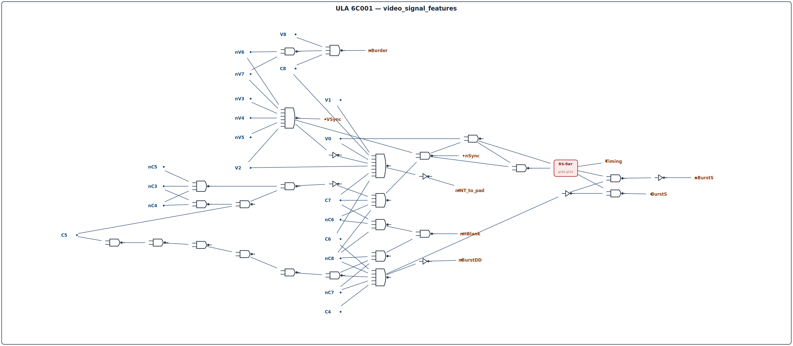
. Oscillograms: w_hline,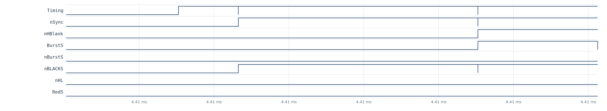
, w_vframe, w_frame.C++
struct VideoSignalFeatures {
bool nSync, VSync, nHBlank, nBorder, nINT;
void eval(uint16_t C, uint16_t V) {
// windows measured in the model (448-cycle line, 312 lines)
bool C8 = (C >> 8) & 1, C7 = (C >> 7) & 1, C6 = (C >> 6) & 1;
bool V7 = (V >> 7) & 1, V6 = (V >> 6) & 1, V5 = (V >> 5) & 1;
bool V4 = (V >> 4) & 1, V3 = (V >> 3) & 1, V2 = (V >> 2) & 1;
nBorder = !(C8 || (V >= 248)); // simplified, see equations
VSync = (V & 0x1FF) >= 248 && (V & 0x1FF) <= 251;
bool hsync = C >= 368 && C < 400; // HSync window (approximately)
nSync = !(VSync || hsync);
bool hblank = C >= 384 || C < 16; // left/right blank
nHBlank = !hblank;
nINT = !(V < 8 && C < 64); // start of frame
}
};
Note: the windows in the C++ above are illustrative; the exact gate-level
decades are given in the table and in the source hdl/ula6c001.v.
17. dac_setup — video DAC input preparation
Purpose
From the color signals (Red/Green/Blue), sync, and Timing, forms the
15 digital inputs i0..i14 of the video DAC (pads U/V//Y): normal color,
half brightness (D/DD), blanking (BLACKS), sync (nSyncD), HL
(high-light), burst packets.
Interface
dac_setup ( input Timing, nSync, Red, HL(AO[6]), Blue, Green,
output BlueD, RedD, nRedDD, nBLACKS, nHL, nSyncD, GreenD,
RedS, BlueDD, nGreenDD, nBlueS, nGreenS );
Equations (from gates g1..g23, g152..g179, g211..g216, g624,g625)
g152: w152 = nor3(Green, Red, Blue) // no colour set -> 0
g174: w129 = nor3(w130, w3, w128) // "black": colour blanking
g19 : nBLACKS = not w129 // /BLACKS signal to the DAC
g23 : nHL = not AO[6] // high-light (HL)
g5 : nSyncD = not not nSync // nSync buffer
// channels:
R: RedD = not not Red; nRedDD = nor(w152, Red)
G: GreenD= not not Green; nGreenDD= nor(Green, w152)
B: BlueD = not not Blue; BlueDD = not nor(w152, Blue) // g20/g21/g214
// luminance "S" signals (after the Timing logic g176..g178):
RedS = not nor(w129, w128) ... nGreenS = nor(w3, w129); nBlueS = nor(w130, w129)
Double inverters (g15..g18 and the like) provide delay/buffering of the
DAC halves (brightness and half brightness). See the source for the exact
gate table.
Schematic:
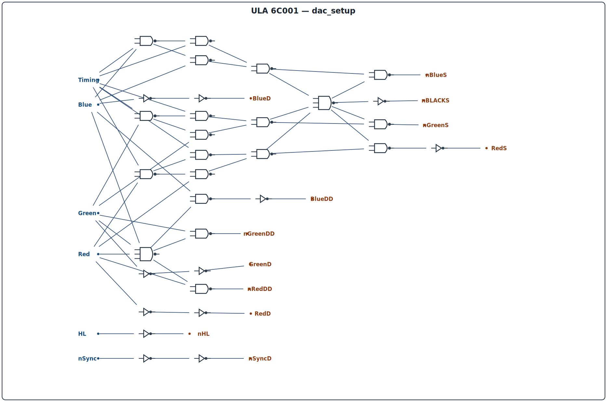
. Waveform: w_dac_sync.C++
struct DacSetup {
// DAC inputs (see pads.md: U,V,/Y are analogue; here the digital bits)
bool BlueD, RedD, nRedDD, nBLACKS, nHL, nSyncD, GreenD;
bool RedS, BlueDD, nGreenDD, nBlueS, nGreenS;
void eval(bool Timing, bool nSync, bool Red, bool HL,
bool Blue, bool Green) {
bool none = !(Green || Red || Blue); // nor3
nBLACKS = !none;
nHL = !HL;
nSyncD = nSync;
RedD = Red; GreenD = Green; BlueD = Blue;
nRedDD = !none && !Red; // red blanking
nGreenDD = !none && !Green;
BlueDD = none || Blue;
RedS = !none && Red; // after the Timing logic
nGreenS = !none || Green;
nBlueS = !none || Blue;
}
};
18. io — I/O port (keyboard, border, mic/ear)
Purpose
Decodes CPU accesses to the ULA ports (/IOREQ + A0=0):
- write (nPortWR): 5-bit register — Speaker, Tape, B2_G, B1_R,
B0_B (beep, mic, border color);
- read (nPortRD): keyboard lines KB0..KB4 onto D4..D0 and the
EAR input onto D6.
Interface
io ( input nIOREQ, nWR, nRD, nIOREQT2, A0_from_pad,
input KB4..KB1_from_pad, KB0_from_pad, D0..D4_from_pad,
input Ear_Input,
output nTape, B0_B, B1_R, B2_G, D6_to_pad, D1_to_pad, ... , nSpeaker );
Analysis
g622: w237 = nor4(nIOREQ, A0_from_pad, nWR, nIOREQT2); g77: nPortWR = not w237
g623: w317 = nor4(nIOREQ, A0_from_pad, nRD, nIOREQT2); g80: nPortRD = not w317
// port is open when /IOREQ=0, A0=0 and there is no "IOREQ phase 2" (contention)
KB: D4_to_pad = not nor(nPortRD, KB4) ... D0_to_pad = not nor(KB0, nPortRD)
Ear: D6_to_pad = not nor(Ear_Input, nPortRD)
GD port[4:0]: on nPortWR: Q = {Speaker, Tape, B2_G, B1_R, B0_B} = D4..D0
g37: nTape = not Tape ; g38: nSpeaker = not Speaker
B0_B/B1_R/B2_G go to attr_latch as the border color (see section 7);
nSpeaker/nTape are open collectors on the SOUND pad (in hdl/ulabase.v
the pad model is stubbed out: from_pad = 0).
Schematic:
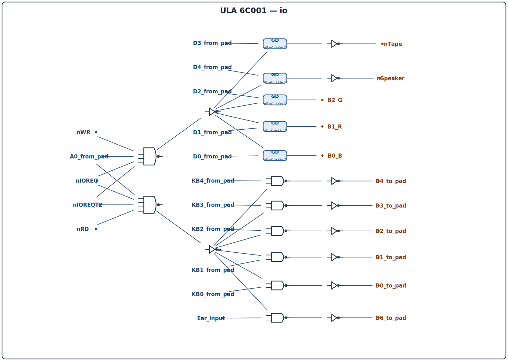
. Waveform: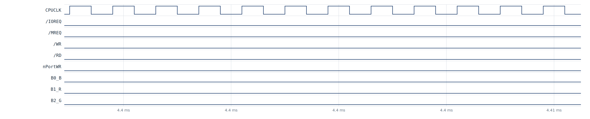
.C++
struct IO {
bool nPortWR = 1, nPortRD = 1;
bool B0_B=0, B1_R=0, B2_G=0, Speaker=0, Tape=0;
uint8_t reg = 0; // 5-bit port
void decode(bool nIOREQ, bool A0, bool nWR, bool nRD, bool nIOREQT2) {
bool sel = !nIOREQ && !A0 && !nIOREQT2;
nPortWR = !(sel && !nWR);
nPortRD = !(sel && !nRD);
}
void write_cycle() {
if (!nPortWR) { reg = reg; /* take D4..D0 from the bus */ }
B0_B = (reg >> 0) & 1; B1_R = (reg >> 1) & 1; B2_G = (reg >> 2) & 1;
Tape = (reg >> 3) & 1; Speaker = (reg >> 4) & 1;
}
bool d4_from_kb(bool kb4) { return !(!nPortRD && kb4); } // to the D4 pad
};
19. contention — DRAM arbitration (CPU clock stretching)
Purpose
The trickiest place: it decides who currently owns the DRAM (video or CPU)
and forms the processor clock CPUCLK (/PHICPU). In idle, CPUCLK repeats
C0 (3.5 MHz). When the CPU tries to reach the RAM (0x4000–0x7FFF) at the
moment the video is fetching memory, the CPUCLK edge is delayed — the famous
ZX Spectrum “contention” (a clock pause of 1..6 half-ticks, depending on the
phase).
Interface
contention ( input nMREQ, nIOREQ, Border, A14, A15, C2, C3, C0_other,
output CPUCLK, nIOREQT2 );
Analysis
GD mreq_gd : MREQT2 = ~D(nMREQ), transparent when CPUCLK_internal=0
GD ioreq_gd: nIOREQT2/IOREQT2 = captures nIOREQ on CPUCLK_internal
g384: w414 = nor(w359, w477, C0_other) // C0_other = C0 (3.5 MHz)
g44 : CPUCLK = not w414 // CPUCLK_internal = not w414
g411: w360 = nor(C2, C3)
g383: w477 = nor(w413, w412, w360, w361) // decides "CPU RAM access"
g385: w412 = nor(w410, w411); w411 = not A15; w410 = not nIOREQ
g386: w413 = nor(A14, w410)
g404: w362 = nor(IOREQT2, Border, nCPUCLK_internal, MREQT2)
g405: w359 = nor5(Border, nCPUCLK_internal, nIOREQ, w360, IOREQT2)
Meaning: while there are no CPU requests (nMREQ=nIOREQ=1), w359/w477 are
suppressed and CPUCLK = C0_other (a free 3.5 MHz clock). The appearance of a
RAM request (nMREQ=0, A14=1) during a video fetch stops the CPUCLK tick
through the MREQT2/IOREQT2 latches and the w359/w477 logic (a pause for
the time the ULA takes the DRAM) — that is exactly the contention.
A word of caution about the model: the arbiter in this netlist is an
asynchronous ring (no external clock). In the tick-by-tick level-settled
model single bus pulses behave stably (waveform below), but a continuous
free-running CPU knocking on the RAM during a video fetch can excite the ring
(ulasim.py has a relaxation-iteration guard) — the full clock-stretching
scenario is not yet worked out (honest limitation, section 21).
Schematic:
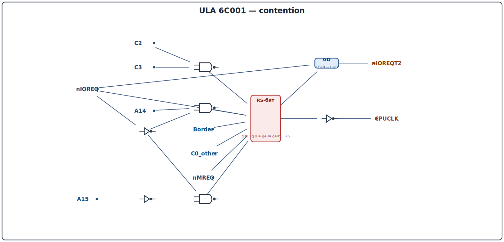
. Waveform (a CPU RAM-access attempt during a video fetch):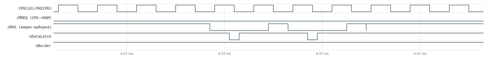
.C++
// contention: CPU clock = C0, stretched when conflicting with video
struct Contention {
bool nIOREQT2 = 1; // nIOREQ latch (phase 2)
bool stretch = 0; // flag "give the tick to video"
void eval(bool nMREQ, bool nIOREQ, bool Border, bool A14, bool A15,
bool C2, bool C3, bool C0) {
// CPU RAM request (0x4000-0x7FFF)
bool cpuRAM = nMREQ == 0 && A14 == 1 && A15 == 0;
// video is active (not border) in this part of the line
bool videoBusy = !Border && !(C2 | C3); // simplified
stretch = cpuRAM && videoBusy;
}
bool cpuclk(bool C0) { return stretch ? 0 : C0; } // holding the tick
};
20. Top ula and pads
The top-level module ula (hdl/ula6c001.v:6) instantiates all 19 modules
and 35 pads. The pads are described separately in pads.md; here —
only what is needed to read the module schematics:
- inputs:
OSC,/RD,/WR,/MREQ,/IOREQ,A15,A14,KB1..4,SOUND(EAR, 0 in the model); - data buses
D0..D7— open-collector to the outside, split internally intoD*_from_pad/D*_to_pad; - outputs:
/RAS,/CAS,/WE,/ROMCS,A1..A6(+ bidirectionalA0withnAE),/INT,/PHICPU(inverting OC),U,V,/Y(analogue); - keyboard lines
KB0..KB4;KB0is bidirectional (test modeK0).
Top-level connection map (from ula6c001.v): s_top.
The full signal-by-signal list of the top-level wiring (from/to/description) is in ula-signals.en.md.
21. Simulator: ulasim.py
ulasim.py (repository root) — a tick-by-tick simulator of this same HDL in
Python:
- it parses
hdl/ula6c001.v+hdl/ulabase.vitself and unfolds the hierarchy into a flat network (1:1 at the gate level,gNNNnumbers kept); - the semantics is the same as in the reference Icarus run: the 2-input
noris behavioural (“X treated as 1”),not/nor3+— ordinary three-valued logic,GD— a transparent latch; - after every input event the network is relaxed to a fixed point — this is how the RS latches and master–slave cells are reproduced without “X-sticking”;
- it prints a VCD with the typical signal set (the
icarus/ula.gtkwmonitors):OSC,nCLK7,C[8:0],V[8:0], sync/blank/border, latch strobes, RAS/CAS/WE, address/data, flash/DataSelect, DAC inputs, IO ports.
Running:
python3 ulasim.py # typical run (with CPU activity)
python3 ulasim.py --mode idle # ULA in vacuum
python3 ulasim.py --mode idle --end-us 15000 --vcd my.vcd
Honest model limitations (important when reading the waveforms):
OSCis 20 MHz (50 ns) in the model vs 14 MHz on the real chip — the logic is frequency independent, only the time scale differs;- the model's time grid is 25 ns (half period of OSC), so pulses shorter
than ~25 ns look “one sample wide” (e.g.
nDataLatch= 25 ns in the model); - bits
V[3..8]of the vertical counter are marked// not surein the HDL (the reverse engineering is unfinished) — the model honestly reproduces the current HDL state, including possible parasitic within-line transitions; - the CPU model (
--mode typical) is a simplified bus-cycle generator synchronised to its ownCPUCLKedges (a cycle may start only when the video does not own the DRAM), not a cycle-true Z80 core; continuous CPU cycles at the moment of a video fetch can excite the asynchronous arbiter (section 19), so single bus pulses were used for the contention/IO waveforms; - the analogue pads (
SOUND, the video DAC) are still stubs inhdl/ulabase.v.
Verified model measurements (used in the sections above):
| Parameter | Value (model, OSC=20 MHz) | Real chip |
|---|---|---|
nCLK7 |
10 MHz (OSC÷2) |
7 MHz (OSC÷2, OSC=14 MHz) |
scanline (HCrst period) |
448 nCLK7 ticks = 44.8 µs |
448 × 142.9 ns = 64 µs |
| frame | 312 scanlines = 13.98 ms | 312 × 64 µs ≈ 20 ms |
V reset |
on the 312th scanline | 312 scanlines |
VSync |
decade V ∈ {248..251} |
the same decade (from the gates) |
| data fetches/scanline | 32 pixel bytes + 32 attributes (in pairs) | 32+32 |
nAOLatch/scanline |
56 (every 8 ticks) | 56 |
Appendix. Mapping to the icarus/ula.gtkw signals
The monitor names from the testbench (Chris Smith style) and their location in the current modular HDL:
| monitor (.gtkw) | HDL net |
|---|---|
nHSyncPulses |
video_signal_features_inst.w71 |
C5delay |
video_signal_features_inst.w103 |
HSync |
video_signal_features_inst.w118 |
Burst |
C[5] (in the old testbench) |
RAM16 |
ras_cas_romcs_inst.w242 |
VidCASAC/VidCASBD |
ras_cas_romcs_inst.w434 / w433 |
MUXSEL |
ras_cas_romcs_inst.w246 |
Tape/Speaker |
io_inst.w487 / io_inst.w484 (internal GD signals) |
Ear |
Ear_Input |
DataLatch/AttrLatch/AOLatch |
~nDL / AL / AO |
Pixel |
shift stages of pixel_shift_reg |
The full monitor list — default_monitors() in ulasim.py.